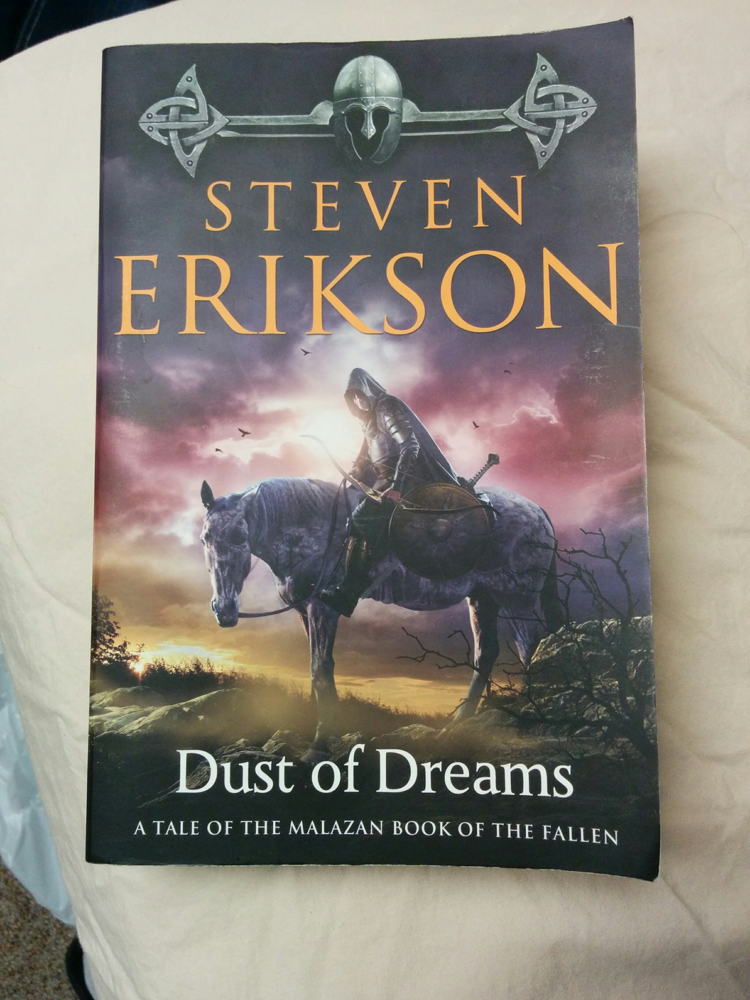

Here's what I'm currently reading:

Dust of Dreams by Steven Erikson
I really love the Malazan Series, but I've never actually managed to finish books 9 and 10. I'd like to actually finish the series, so I bought Dust of Dreams on Audible and I'm listening to it on long car rides. I should have it finished by the end of the year.
Most Recent Review

Haxan by Kenneth Mark Hoover
My rating: 3 of 5 stars
The plot structure felt lacking to me, it seemed more like three short stories stapled together rather than a complete novel. I liked the Western parts of the book, but the magical background of the hero just felt underdeveloped. I was told how powerful and dangerous he was but I never really saw that in action, except for his quick draw skills.